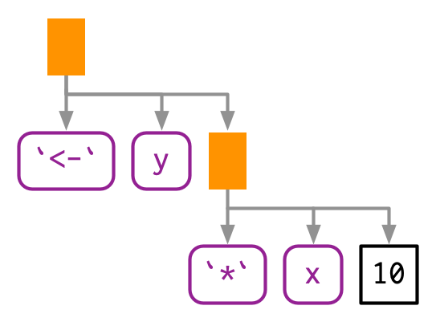

#> Error: object 'x' not foundAbstract Syntax Tree (AST)
- Expressions are objects that capture the structure of code without evaluating it.
- Expressions are also called abstract syntax trees (ASTs) because the structure of code is hierarchical and can be naturally represented as a tree.
- Understanding this tree structure is crucial for inspecting and modifying expressions.
- Branches = Calls
- Leaves = Symbols and constants

With lobstr::ast():
#> █─f
#> ├─x
#> ├─"y"
#> └─1- Some functions might also contain more calls like the example below:

#> █─f
#> ├─█─g
#> │ ├─1
#> │ └─2
#> └─█─h
#> ├─3
#> ├─4
#> └─█─i- Read the hand-drawn diagrams from left-to-right (ignoring vertical position)
- Read the lobstr-drawn diagrams from top-to-bottom (ignoring horizontal position).
- The depth within the tree is determined by the nesting of function calls.
- Depth also determines evaluation order, as evaluation generally proceeds from deepest-to-shallowest, but this is not guaranteed because of lazy evaluation.
Infix calls
Every call in R can be written in tree form because any call can be written in prefix form.
An infix operator is a function where the function name is placed between its arguments. Prefix form is when then function name comes before the arguments, which are enclosed in parentheses. [Note that the name infix comes from the words prefix and suffix.]
- A characteristic of the language is that infix functions can always be written as prefix functions; therefore, all function calls can be represented using an AST.

#> █─`<-`
#> ├─y
#> └─█─`*`
#> ├─x
#> └─10#> █─`<-`
#> ├─y
#> └─█─`*`
#> ├─x
#> └─10- There is no difference between the ASTs for the infix version vs the prefix version, and if you generate an expression with prefix calls, R will still print it in infix form:
#> y <- x * 10Parsing and grammar
- Parsing - The process by which a computer language takes a string and constructs an expression. Parsing is governed by a set of rules known as a grammar.
- We are going to use
lobstr::ast()to explore some of the details of R’s grammar, and then show how you can transform back and forth between expressions and strings. - Operator precedence - Conventions used by the programming language to resolve ambiguity.
- Infix functions introduce two sources of ambiguity.
- The first source of ambiguity arises from infix functions: what does 1 + 2 * 3 yield? Do you get 9 (i.e., (1 + 2) * 3), or 7 (i.e., 1 + (2 * 3))? In other words, which of the two possible parse trees below does R use?

- Programming languages use conventions called operator precedence to resolve this ambiguity. We can use
ast()to see what R does:
#> █─`+`
#> ├─1
#> └─█─`*`
#> ├─2
#> └─3- PEMDAS (or BEDMAS or BODMAS, depending on where in the world you grew up) is pretty clear on what to do. Other operator precedence isn’t as clear.
- There’s one particularly surprising case in R:
- ! has a much lower precedence (i.e., it binds less tightly) than you might expect.
- This allows you to write useful operations like:
#> █─`!`
#> └─█─`%in%`
#> ├─x
#> └─y- R has over 30 infix operators divided into 18 precedence groups.
- While the details are described in
?Syntax, very few people have memorized the complete ordering. - If there’s any confusion, use parentheses!
#> █─`*`
#> ├─█─`(`
#> │ └─█─`+`
#> │ ├─1
#> │ └─2
#> └─3Associativity
- The second source of ambiguity is introduced by repeated usage of the same infix function.
#> [1] 6#> [1] 6#> [1] 6In this case it doesn’t matter. Other places it might, like in
ggplot2.In R, most operators are left-associative, i.e., the operations on the left are evaluated first:
#> █─`+`
#> ├─█─`+`
#> │ ├─1
#> │ └─2
#> └─3- There are two exceptions to the left-associative rule:
- exponentiation
- assignment
#> █─`^`
#> ├─2
#> └─█─`^`
#> ├─2
#> └─3#> █─`<-`
#> ├─x
#> └─█─`<-`
#> ├─y
#> └─zParsing and deparsing
- Parsing - turning characters you’ve typed into an AST (i.e., from strings to expressions).
- R usually takes care of parsing code for us.
- But occasionally you have code stored as a string, and you want to parse it yourself.
- You can do so using
rlang::parse_expr():
#> [1] "y <- x + 10"#> [1] FALSE#> y <- x + 10#> [1] TRUEparse_expr()always returns a single expression.- If you have multiple expression separated by
;or,, you’ll need to userlang::parse_exprs()which is the plural version ofrlang::parse_expr(). It returns a list of expressions:
#> [[1]]
#> a <- 1
#>
#> [[2]]
#> a + 1- If you find yourself parsing strings into expressions often, quasiquotation may be a safer approach.
- More about quasiquaotation in Chapter 19.
- The inverse of parsing is deparsing.
- Deparsing - given an expression, you want the string that would generate it.
- Deparsing happens automatically when you print an expression.
- You can get the string with
rlang::expr_text(): - Parsing and deparsing are not symmetric.
- Parsing creates the AST which means that we lose backticks around ordinary names, comments, and whitespace.
#> {
#> x <- x + 1
#> }